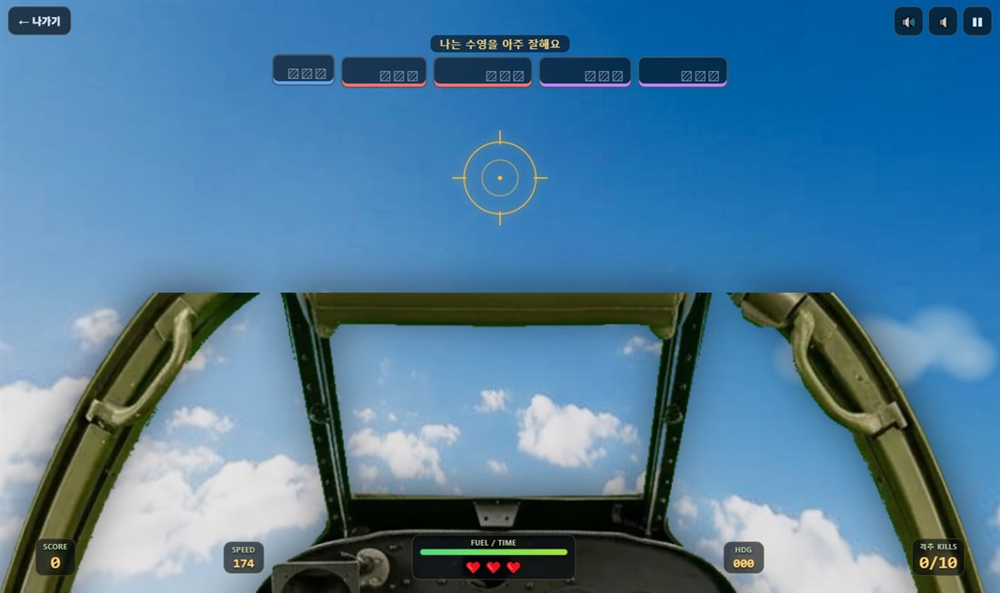
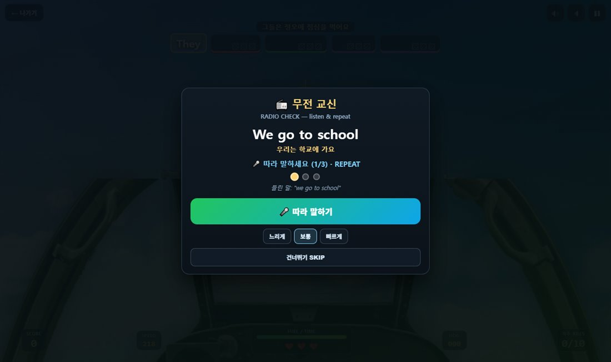
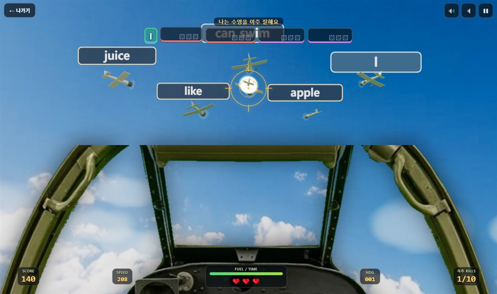
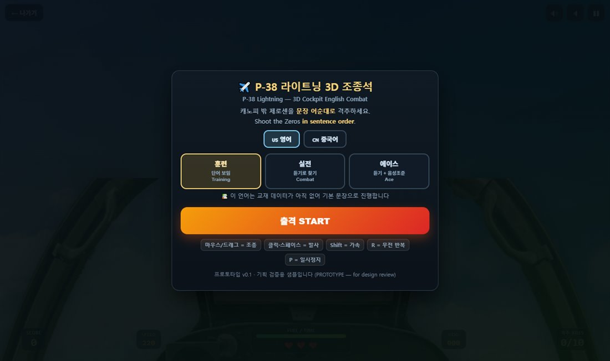
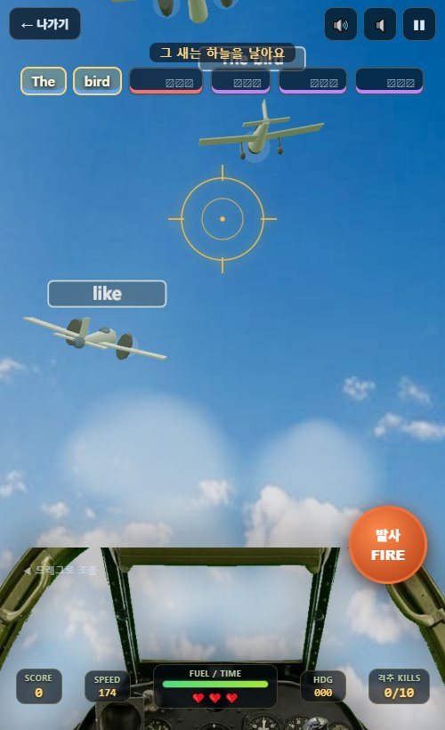

student-game-language-ace.html)은 학습 루프가 이미 검증됐습니다.
이 제안은 그 루프를 그대로 두고 시점만 조종석 1인칭으로 바꿉니다.
실물 P-38 조종석 사진 1인칭.
캐노피 아치가 화면을 감싸고 그 너머가 전부 하늘.
제로센 하나가 아니라 전투기 2종 + 폭격기 2종 + 에이스기.
듣고 → 찾고 → 쏘고 → 말한다.
말해야 다음으로 넘어간다.
214KB실사 하늘 104KB + 실물 조종석 110KB. 기체는 코드로 그려 0바이트.
비행 게임 장르는 30년 넘게 "어떻게 하면 비행이 어렵지 않게 느껴지는가"를 갈아온 분야입니다. 아이용 학습 게임이 가장 크게 실패하는 지점이 조작이 어려워서 학습에 도달하지 못하는 것이라, 이 축적을 그대로 빌려옵니다. 아래는 각 게임에서 무엇을 배우고, 우리 게임에서 어떻게 쓰는지입니다.
| 참고 작품 | 그 게임이 푼 문제 | 망고아이에 어떻게 적용하나 |
|---|---|---|
| Ace Combat 반다이남코 |
실제 비행역학을 버리고 "조준선에 넣으면 맞는다"는 단순 규칙으로 대체. 초보도 5분이면 격추한다. | 채택. 발사 판정을 물리 탄도가 아닌 조준각 히트스캔으로 처리. 가까울수록 판정을 넓혀 저학년도 맞힌다. 저사양 기기에서도 정확도가 흔들리지 않는 부수 효과까지 얻는다. |
| War Thunder 가이진 |
기체마다 실루엣과 성능이 확실히 다르게 보여, 멀리 있어도 "무엇이 오는가"를 눈으로 판단하게 한다. | 채택. 전투기(날렵)·급강하폭격기(고정 착륙장치)·쌍발 폭격기(굵은 동체)를 실루엣만으로 구분되게 만들었다. 이 구분이 곧 학습 난이도 신호가 된다(아래 4장). |
| IL-2 Sturmovik 1C |
계기판·캐노피 프레임을 실물 배치로 두어 "조종석에 앉았다"는 몰입을 만든다. | 일부만 채택. 몰입은 가져오되 계기 읽기는 학습이 아니다. 계기판은 화면 아래 12%로 낮추고, 남는 면적을 전부 하늘에 준다. 창을 키우는 것이 학습 면적을 키우는 것. |
| Star Fox 닌텐도 |
레일 위를 달리듯 진로는 게임이 잡아주고 플레이어는 조준·회피만 한다. 길을 잃지 않는다. | 채택. 적기가 플레이어 정면 39° 안에 항상 머물도록 상대운동으로 묶었다. "적을 못 찾아서 못 배우는" 사고를 구조적으로 없앤다. |
| 1942 / 스트라이커즈 캡콤·라이징 |
한 판이 짧고, 실패해도 즉시 재시작. 실패의 비용이 작아 계속 시도한다. | 채택. 오답을 쏴도 목숨은 깎지 않고 시간만 줄인다. "틀려도 계속 난다"가 학습 지속의 핵심이다. |
| Sky Gamblers Atypical |
모바일에서 한 손 드래그 조종을 정착시킴. 가상 스틱 없이도 비행이 된다. | 채택. 화면 어디나 드래그 = 조종, 우측 큰 버튼 = 발사. PC는 마우스 위치가 곧 조종. 학습 전 조작 설명이 한 줄이면 끝난다. |
| ELSA Speak 발음 교정 앱 |
발음을 점수로 즉시 돌려준다. 잘/못을 감이 아니라 수치로 안다. | 채택 + 게임화. 발음 성공을 점수판이 아니라 게임 진행 조건으로 만든다 — 말해야 에이스기 조준이 풀린다(5장 '음성 조준'). |
| Duolingo | 틀린 항목을 다시 출제 대기열에 넣는 간격반복. | 이미 보유. 오답 낱말을 /api/games/progress로 보내
약점 단어(/api/games/weak)에 누적 → 웜업·복습퀴즈가 재출제. 새 서버 작업 없음. |
| Kahoot | 정답 선택지를 색·모양으로 구분해 읽기 부담을 줄인다. | 채택. 문장 성분(주어·동사·목적어·수식어)을 낱말 칸 밑줄 색으로 표시. 어순을 문법 용어가 아니라 색의 순서로 체득시킨다. |
학습 게임이 실패하는 가장 흔한 형태는 "게임 따로, 문제 따로"입니다.
비행기 좀 쏘다가 갑자기 사지선다 창이 뜨는 방식이 그렇습니다. 아이는 게임만 하고 문제는 찍습니다.
이 기획의 원칙은 하나입니다 — 게임에서 하는 동작 자체가 학습 행위여야 한다.
| 게임에서 하는 짓 | 사실은 무슨 훈련인가 | 왜 그게 훈련이 되는가 |
|---|---|---|
| 창밖을 훑어 적기를 찾는다 | 낱말 재인 word recognition | 5기에 흩어진 낱말 중 목표를 골라야 한다. 보기가 화면에 나열된 객관식과 달리 스스로 시선을 옮겨 찾아야 해서 기억 인출이 강하게 걸린다. |
| 무전을 듣고 목표를 정한다 | 청해 변별 listening | 실전·에이스 난이도는 다음 낱말을 화면에 띄우지 않는다. 관제 무전(원어민 음성)이 유일한 단서다.
오답기 라벨에 go/goes, school/schools 같은 혼동쌍을 섞어
귀로 구분하게 만든다. |
| 어순대로만 격추된다 | 문장 구조 syntax | 순서가 틀리면 진행되지 않는다. 어순을 '규칙 설명'이 아니라 손으로 반복해서 익힌다. |
| 폭격기는 덩어리를 싣는다 | 청크 단위 처리 chunking | to school, a book처럼 같은 성분의 이웃 두 낱말을 폭격기가 함께 싣는다.
낱말을 하나씩 끊어 듣던 아이가 덩어리로 듣기 시작하는 지점을 만든다. |
| 문장 완성 후 무전 교신 | 발화 speaking | 듣기 3회 → 따라 말하기 3회. 음성인식으로 채점하되 관대하게(단어 65% 일치) — 발음 완벽주의는 아이를 침묵시킨다. |
| 에이스기는 말해야 조준된다 | 발화 강제 forced output | 발음이 점수가 아니라 진행 조건이다. 말하기를 건너뛸 수 없게 만드는 유일하게 확실한 장치. |
| 틀린 낱말을 기록한다 | 간격반복 spaced repetition | 오답이 서버에 쌓여 웜업·복습퀴즈에서 다시 나온다. 이 게임 안에서 끝나지 않는다. |
기체를 여러 종류로 두는 이유는 구색이 아닙니다. 실루엣이 곧 문제 유형 표시가 되게 하려는 것입니다. 아이는 두 판만 하면 "큰 쌍발기가 뜨면 덩어리 표현이구나"를 몸으로 압니다.
| 기체 | 역할 | 싣는 것 | 내구 | 학습 의도 |
|---|---|---|---|---|
| A6M 제로센 A6M Zero | 해군 전투기 | 낱말 1개 | 1발 | 기본 단위. 빠르게 여러 번 맞히며 리듬을 만든다. |
| Ki-43 하야부사 Ki-43 Oscar | 육군 전투기 | 낱말 1개 | 1발 | 제로센과 도색·속도가 달라 화면이 단조로워지지 않게 한다. 조금 더 빠르다. |
| D3A 급강하폭격기 D3A Val | 폭격기(소) | 덩어리 표현 | 2발 | 고정 착륙장치라 실루엣이 확 다르다. 두 낱말을 한 호흡에 듣게 만든다. |
| G4M 1식 육상공격기 G4M Betty | 폭격기(대) | 덩어리 표현 | 3발 | 가장 크고 느리다. 여러 발 필요 = 표현을 반복해 듣는 시간을 자연스럽게 번다. |
| 적 에이스기 Enemy Ace | 보스 | 문장 전체 | 3발 | 노란 띠·붉은 스피너. 문장을 소리내어 말해야 조준이 걸린다. |
난이도를 '적이 빨라짐'으로만 만들지 않았습니다. 단계마다 어느 감각으로 푸는지가 바뀝니다.
| 단계 | 다음 낱말 | 한국어 뜻 | 말하기 | 실제로 훈련되는 것 |
|---|---|---|---|---|
| 훈련 Training | 화면에 보임 | 보임 | 문장 완성 후 3회 | 읽기 + 어순. 처음 오는 아이가 규칙을 익히는 단계. |
| 실전 Combat | 가림 ▨▨▨ | 보임 | 문장 완성 후 3회 | 듣기. 한국어 뜻만 보고, 영어는 귀로 받아 문장을 세운다. |
| 에이스 Ace | 가림 ▨▨▨ | 가림 | 말해야 조준됨 | 듣기 + 말하기. 문자 단서 없이 소리만으로 문장을 세우고, 입으로 마무리한다. |

cloudflare-deploy/public/student-game-p38-3d.html (단일 HTML, 빌드 불필요)student-games.html) 연결 — 시안 단계라 학생에게 노출하지 않았습니다.


lesson-nav.js 공용 모듈 재사용).
| 항목 | 결과 |
|---|---|
TypeScript 컴파일 npx tsc --noEmit | 오류 0 |
회귀 하니스 node test-harness/run.mjs --fast | 47 PASS · 0 FAIL (E2E 19건은 라이브 필요로 정상 제외) |
| 실브라우저 플레이 검증 | 명중 판정 · 격추 · 문장 진행 · 점수 · 추락 잔해 전부 동작 확인(위 스크린샷은 실제 실행 화면) |
| 내려받는 용량 | 실사 하늘 104KB + 실물 조종석 110KB + HTML 1개. 기체·구름·폭발은 코드 생성이라 추가 0바이트 |
아래는 이론이 아니라 이번 샘플을 만들며 실제로 터뜨리고 고친 것들입니다.
| 증상 | 진짜 원인 | 해결 |
|---|---|---|
| 하늘이 텅 비고 적기가 안 보였다 | 플레이어가 초당 150m로 전진하는데 적기를 월드 좌표에서 독립적으로 움직였다. 1~2초 만에 전부 뒤로 흘러갔다. | 적기를 플레이어 속도벡터에 얹고 그 위에 회피기동만 더하는 상대운동으로 교체. 붙어 날면서 계속 창에 머문다. |
| 가려놓은 단어가 비쳐 보였다 | color:transparent만 걸었더니 text-shadow가 그대로 남아 글자 윤곽이 읽혔다.
듣기 문제가 통째로 새 나갔다. |
가림 상태에서 text-shadow:none 동시 적용. |
| 하늘이 위아래 뒤집혔다 | 텍스처 flipY 때문에 캔버스 위쪽이 구의 천정에 온다. 그라디언트를 반대로 넣었다. |
그라디언트 순서 반전. 실사 사진으로 교체하며 자연 해결. |
| 하늘 아래로 흰 띠가 칼같이 생겼다 | 바다 평면을 깔았더니 사진 하늘과 만나는 자리에 경계선이 생겨 사진이 통째로 싸구려로 보였다. | 바다 평면 제거. 파노라마 아래쪽이 이미 '발밑 구름바다'다. 고도는 PULL UP 경고로 지킨다. |
| 듣기 모드가 사실은 찍기였다 | 난이도 설정 하나로 문장 바와 적기 라벨을 같이 숨겼다. 라벨이 없으면 들어도 어느 기체인지 알 수 없어 찍을 수밖에 없다. | 적기 라벨은 항상 표시. 숨기는 것은 문장 바뿐. 설계 오류였고, 샘플로 잡았다. |
| 적기가 창틀에 잘렸다 | 정면 유지 각을 51°로 잡았는데 화면 가로 화각이 ±47°였다. | 39°로 조임. 라벨까지 화면 안에 들어온다. |
| 실물 조종석을 붙이자 계기판이 화면을 다 덮었다 | 원본 사진이 좌석 뒤에서 찍혀 계기판이 한복판에 크게 나온다. 조종사 눈높이가 아니다. | 사진을 140%로 키우고 아래로 −93% 밀어 캐노피 아치가 화면을 감싸고 계기판은 하단에 오게 배치. |
| 조준기에 넣었는데 안 맞았다 | 계기판을 피해 조준기를 화면 30% 지점으로 올렸는데, 사격 판정은 여전히 화면 정중앙(카메라 정면)을 썼다. | aimVec() 하나로 통일 — 사격·예광탄·적기 배치가 모두 조준기 위치를 기준으로 돈다. |
| 적기가 전부 화면 위로 날아가 버렸다 | 조준 방향(위쪽)으로 적기를 밀어 넣는 로직이라, 밀수록 계속 떠올랐다. 게다가 상하 각도 부호를 반대로 줘서 아래로 흩뿌리려던 것이 위로 몰렸다. | 적기마다 조준선 기준 고정 슬롯(좌우 균등 분배 + 상하 교차)을 주고 그 지점을 목표로 삼게 교체. 라벨이 겹치지도, 잘리지도 않는다. |
| 항목 | 내용 |
|---|---|
| 렌더 | 로컬 /vendor/three/three.min.js (r128, 이미 저장소에 있음). 외부 CDN 의존 0 |
| 기체·구름·폭발 | 전부 절차생성(코드). 다운로드 0바이트, 저사양 안드로이드 대응 |
| 하늘 | 실사 파노라마 1장(104KB). 로드 실패 시 코드 그라디언트로 자동 폴백 — 하늘이 비는 일은 없다 |
| 조종석 | 실물 조종석 사진을 크로마키한 알파 WebP(110KB). 초록이 빠진 자리로 3D 하늘이 그대로 비친다.
배치는 CSS 변수 --cpW/--cpB 두 개로만 조절 — 세로 화면(모바일)은 미디어쿼리로 따로 잡는다 |
| 음성(듣기) | 기존 계단 그대로: /api/voice/tts(영어 원어민) → /api/tts-free(중국어) → 앱 네이티브 → 기기 음성 |
| 음성인식(말하기) | mangoi-stt.js 공용 모듈 재사용(안드로이드 세션 조기종료 대응 포함) |
| 교재 연동 | lesson-nav.js 공용 모듈 재사용 — 학생 배정 교재의 레슨 문장이 그대로 들어온다 |
| 학습기록 | /api/games/progress — 서버 신규 개발 없음 |
| WebGL 불가 기기 | 2D 버전(student-game-language-ace.html)으로 자동 안내 |
src/index.ts 수정 0줄.
프론트 파일 하나만 추가하면 되는 구조로 설계했습니다(공동 금지구역을 건드리지 않습니다).
사장님 지시대로 힉스필드로 실사 에셋을 만들었습니다. 결과와 한계를 그대로 보고드립니다.
| 에셋 | 상태 | 비고 |
|---|---|---|
| 실사 하늘 파노라마 | 완료·적용됨 | 힉스필드 생성 → 104KB로 압축해 스카이돔에 적용. 위 스크린샷의 하늘이 이것입니다. |
| A6M 제로센 실사 렌더 | 생성 완료 | 고품질 이미지 확보. 3D 변환은 크레딧 부족으로 미실행. |
| G4M 폭격기 · Ki-43 실사 | 생성 실패 | 힉스필드 크레딧 소진(잔액 1.5). 요청이 거부됐습니다. |
| 기체 3D 모델(GLB) | 미실행 | 이미지 → GLB 변환에 크레딧 필요. 현재는 코드로 그린 기체가 그 자리를 대신합니다. |
| P-38 조종석 실사 내부 | 완료·적용됨 | 사장님이 주신 실물 P-38 조종석 그린스크린 사진(game_image/P_38.PNG)을
크로마키 처리 → 알파 WebP 110KB. 힉스필드 생성이 필요 없었습니다. |
PLANE[기체].url 에 GLB 경로만 넣으면 자동 교체).| 단계 | 할 일 | 예상 | 선행 조건 |
|---|---|---|---|
| 0 | 지금 이 샘플 검토 · 방향 확정 | — | 사장님 확인 |
| 1 | 모바일 실기기 조작 튜닝(드래그 감도·발사 버튼 위치) | 0.5일 | 없음 |
| 2 | 중국어 모드 문장·혼동쌍 보강, 교재 진도 연동 실검증 | 0.5일 | 없음 |
| 3 | 게임 허브 연결 + 코인·랭킹 연동 | 0.5일 | 1·2 완료 |
| 4 | 실사 GLB 기체 4종 교체 | 1~2일 | 힉스필드 크레딧 |
| 5 | — | 사장님 제공 사진으로 해결 | |
| 6 | 학생 소수 대상 시범 → 체류시간·정답률 비교(2D 버전 대비) | 1주 | 3 완료 |
cloudflare-deploy/public/student-game-p38-3d.html ·
검증: tsc 오류 0 / 회귀 하니스 47 PASS 0 FAIL / 실브라우저 플레이 확인